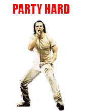

The Internet is Serious Business!
Home > Computers, Technology, and Internet > 4chan > Party Hard

This is an old meme that was occasionally posted on 4chan back when I first discovered the site in December 2007, as well as for a little while afterwards. The proper format was that of an animated GIF image depicting (sometimes using only two frames) a person or character dancing
in some manner, sometimes also including rapidly flashing colors, and always with the text PARTY HARD
overlaid. The whole meme is a reference to the somewhat well-known song of the same name by Andrew W.K., which, back in the day (i.e. the 2000s), was also quite popular on 4chan, or at least amongst us /b/tards.
Regrettably, today this meme is considered an old one, and has largely faded from memory: I cannot recall seeing it with much frequency on 4chan during most of the 2010s. This is a shame, because both the meme, with its over-the-top, lighthearted silliness, as well as the song Party Hard
, with its lyrics and wild energy, truly embody the uninhibited, carefree spirit of old 4chan and old /b/, so much so that I would even regard the song as the unofficial anthem of the latter, and maybe also of the former. Whenever we find ourselves today taking 4chan or the Internet too seriously, perhaps we need to give Party Hard
a listen, post a corresponding GIF image, and remind ourselves always to have fun online.
See also the Encyclopedia Dramatica article on this meme.


 All written materials on this Web site are my own, and all are released under the Do What the Fuck You Want to Public License Version 2.
All written materials on this Web site are my own, and all are released under the Do What the Fuck You Want to Public License Version 2.
This page last modified on 9 April 2021.